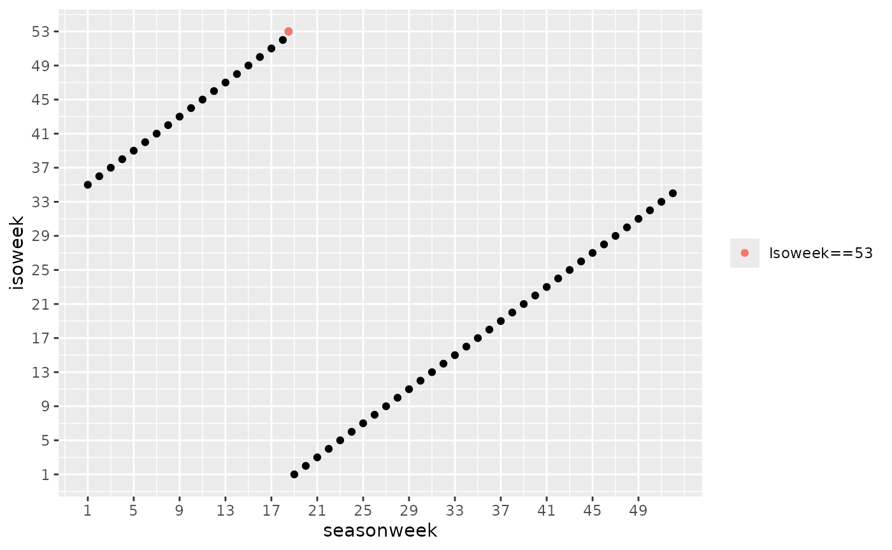

Season week (i.e. the week number within a season) conversion is used for certain outcomes of interest, such as influenza. It is frequently used for plotting purposes.
Isoweek can be integers between 1 and 53. Season week can be integers between 1 and 52. When isoweek is 53, season week is 18.5.
library(cstime)
#> cstime 2025.10.29
#> https://www.csids.no/cstime/
library(magrittr)
library(data.table)
seasonweek_to_isoweek_c(10)
#> [1] "44"
seasonweek_to_isoweek_n(10)
#> [1] 44
isoweek_to_seasonweek_n(1)
#> [1] 19
seasonweek_to_isoweek_n(1:52)
#> [1] 35 36 37 38 39 40 41 42 43 44 45 46 47 48 49 50 51 52 1 2 3 4 5 6 7
#> [26] 8 9 10 11 12 13 14 15 16 17 18 19 20 21 22 23 24 25 26 27 28 29 30 31 32
#> [51] 33 34
isoweek_to_seasonweek_n(1:53)
#> [1] 19.0 20.0 21.0 22.0 23.0 24.0 25.0 26.0 27.0 28.0 29.0 30.0 31.0 32.0 33.0
#> [16] 34.0 35.0 36.0 37.0 38.0 39.0 40.0 41.0 42.0 43.0 44.0 45.0 46.0 47.0 48.0
#> [31] 49.0 50.0 51.0 52.0 1.0 2.0 3.0 4.0 5.0 6.0 7.0 8.0 9.0 10.0 11.0
#> [46] 12.0 13.0 14.0 15.0 16.0 17.0 18.0 18.5